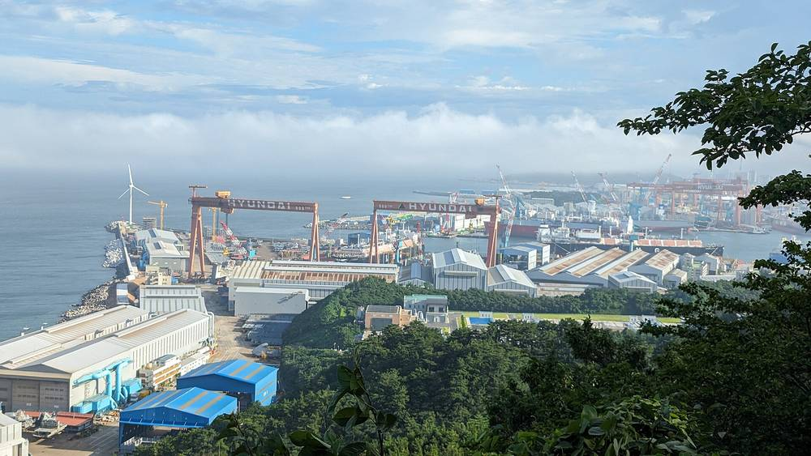

울산 750MW 부유식 해상풍력 '문무바람' 모회사, 25일 청산 여부 주총…자금 확보가 관건

스웨덴 헥시콘, 이사회는 존속 제안했지만 '운영자금 조달 중대한 불확실성' 명시…감사인은 의견 내지 않아
울산 앞바다에서 추진 중인 750MW 규모 부유식 해상풍력 '문무바람' 사업이 모회사의 자금난으로 시험대에 올랐다. 문무바람 지분을 직·간접으로 모두 가진 스웨덴 헥시콘은 지난 6일 공시에서 오는 25일 임시주주총회를 열어 회사를 청산할지 계속 운영할지 심의한다고 밝혔다. 이사회는 존속을 먼저 제안했지만 운영자금 조달 능력에 중대한 불확실성이 있다고 적었고, 감사인 KPMG는 자금조달과 금융자산 재평가를 뒷받침할 증거가 부족하다며 의견을 내지 않았다. 8월 31일 기준 자본총계는 약 8억8,074만 크로나로 등록자본금 약 364만 크로나를 크게 웃돌지만, 실제로 쓸 현금이 있느냐는 별개 문제라는 지적이 나온다. 문무바람은 2024년 8월 환경영향평가 최종 승인과 같은 해 9월 한국전력 송전설비 이용계약을 마쳤고, 지난 9월에는 LS전선·GS엔텍과 항만·물류기업 5곳과 공급망 협약을 맺었다. 주총에서 존속이 결정되더라도 8개월 안에 다시 판단 절차를 거쳐야 해, 입찰 참여와 신규 투자자 유치 계획이 구체적으로 나와야 사업 지속 여부를 가늠할 수 있다.
시민에너지 관점
덴마크와 독일의 풍력 단지는 주민과 지자체가 지분을 나눠 가져 개발사가 흔들려도 사업의 뿌리가 지역에 남도록 해 왔다. 해외 개발사 한 곳에 지분 100%가 몰린 구조에서는 모회사 재무 사정 하나로 수년의 인허가 성과와 지역 공급망 약속이 한꺼번에 흔들린다. 부유식 해상풍력이 비싸고 위험하다는 우려는 공공과 시민이 함께 지분을 갖고 위험을 나눌 때 줄어든다. 울산시와 정부는 이번 일을 계기로 해상풍력 사업권이 넘어갈 때 공공기관과 지역 주민이 지분을 인수할 수 있는 우선권을 제도로 만들어야 한다.
출처: 울산저널i 2026-11-14 이종호 원문 보기
蔚山の750MW浮体式洋上風力「文武バラム」の親会社、25日に清算可否の株主総会…資金確保がカギ
スウェーデンのヘキシコン、取締役会は存続を提案も「運転資金調達に重大な不確実性」と明記…監査人は意見を表明せず
蔚山沖で進む750MW規模の浮体式洋上風力「文武バラム（Munmu Baram）」事業が、親会社の資金難で試練を迎えている。文武バラムの持ち分を直接・間接にすべて持つスウェーデンのヘキシコンは6日の開示で、25日に臨時株主総会を開き会社を清算するか事業を続けるかを審議すると明らかにした。取締役会は存続をまず提案したが、運転資金の調達能力に重大な不確実性があると記し、監査人のKPMGは資金調達と金融資産の再評価を裏付ける証拠が不足しているとして意見を表明しなかった。8月31日時点の資本合計は約8億8,074万クローナで、登録資本金の約364万クローナを大きく上回るが、実際に使える現金があるかは別問題だとの指摘が出ている。文武バラムは2024年8月に環境影響評価の最終承認を、同年9月に韓国電力と送電設備利用契約を済ませ、今年9月にはLS電線、GSエンテック、港湾・物流企業5社とサプライチェーン協約を結んだ。総会で存続が決まっても8カ月以内に再び判断手続きを経る必要があり、入札参加や新たな投資家誘致の計画が具体的に示されなければ事業継続の見通しは立たない。
市民エネルギーの視点
デンマークやドイツの風力発電所は、住民と自治体が持ち分を分け合うことで、開発会社が揺らいでも事業の根が地域に残るようにしてきた。海外の開発会社1社に持ち分100%が集中する構造では、親会社の財務事情一つで数年の許認可の成果と地域サプライチェーンの約束が一度に揺らぐ。浮体式洋上風力は高価でリスクが大きいという懸念は、公共と市民が共に持ち分を持ってリスクを分け合えば和らぐ。蔚山市と政府はこれを機に、洋上風力の事業権が移るときに公的機関と地域住民が持ち分を引き受けられる優先権を制度化すべきだ。
出典: 울산저널i 2026-11-14 이종호 原文を読む
蔚山750MW漂浮式海上风电“文武风”母公司25日召开股东大会决定是否清算…融资成关键
瑞典Hexicon董事会提议存续，但明确“营运资金筹措存在重大不确定性”，审计师未发表意见
在蔚山近海推进的750MW漂浮式海上风电项目“文武风（Munmu Baram）”因母公司资金困难面临考验。直接和间接持有文武风全部股份的瑞典Hexicon在6日的公告中表示，将于25日召开临时股东大会，审议公司是清算还是继续经营。董事会首先提议存续，但写明营运资金筹措能力存在重大不确定性；审计师毕马威（KPMG）则以缺乏支持融资和金融资产重估的证据为由未发表意见。截至8月31日，公司权益总额约为8.8074亿瑞典克朗，远超约364万克朗的注册资本，但有分析指出，是否有可动用的现金是另一回事。文武风已于2024年8月获得环境影响评价最终批准，同年9月与韩国电力公社签订输电设施使用合同，今年9月还与LS电缆、GS Entec及5家港口物流企业签署供应链协议。即使股东大会决定存续，公司也须在8个月内再次进行判断程序，只有拿出参与竞标和引进新投资者的具体计划，才能判断项目能否持续。
市民能源视角
丹麦和德国的风电场通过让居民和地方政府分享股权，使开发商即使动摇，项目的根也能留在当地。在股份100%集中于一家海外开发商的结构下，仅母公司的财务状况就可能让多年的审批成果和地方供应链承诺一起动摇。对漂浮式海上风电昂贵且风险大的担忧，可以通过公共部门和市民共同持股、分担风险来缓解。蔚山市和政府应以此为契机，建立海上风电项目权转让时公共机构和当地居民可优先收购股份的制度。
来源: 울산저널i 2026-11-14 이종호 查看原文
Parent of Ulsan's 750 MW floating offshore wind project Munmu Baram to vote on liquidation on the 25th; funding is key
Sweden's Hexicon board proposes continuing but cites 'material uncertainty' over working capital; auditor declines to give an opinion
The 750 MW Munmu Baram floating offshore wind project off Ulsan faces a test as its parent company struggles for funds. Sweden's Hexicon, which directly and indirectly owns all of Munmu Baram, said in a filing on the 6th that an extraordinary general meeting on the 25th will consider whether to liquidate the company or keep operating. The board proposed continuing but stated there is material uncertainty over its ability to raise working capital, and auditor KPMG declined to give an opinion, citing insufficient evidence to support financing plans and the revaluation of financial assets. Equity stood at about 880.74 million kronor as of August 31, far above registered share capital of about 3.64 million kronor, but observers note that available cash is another matter. Munmu Baram won final environmental impact approval in August 2024, signed a grid-use contract with KEPCO the following month, and this September signed supply-chain agreements with LS Cable, GS Entec and five port and logistics firms. Even if shareholders vote to continue, the company must go through another assessment within eight months, so concrete plans for bidding and new investors are needed before the project's future can be judged.
Citizen Energy View
In Denmark and Germany, wind projects share ownership with residents and municipalities so that the project's roots stay local even when a developer falters. When a single foreign developer holds 100%, one parent company's finances can shake years of permits and local supply-chain promises at once. Concerns that floating offshore wind is costly and risky ease when public bodies and citizens share the risk through joint ownership. Ulsan City and the government should use this case to create a statutory right of first refusal for public agencies and local residents to buy stakes when offshore wind rights change hands.
Source: 울산저널i 2026-11-14 이종호 Read the original